File names, instantly
Substrings, wildcards, regular expressions, AND, OR and NOT, and Everything's own modifiers for size, date, extension and path, answered from the index as you type.
v0.23.0 is done · v0.24.0 is next
Find any file as you type: by its name, the words inside it, how it sounds, what its header says, or a name that is only close to the one you remember.
Freally Sourcerer is free today, but it might not be free forever: future versions may be sold.
There are no downloads yet, and the source code is private.
Every operating system has a search box, and each falls short in its own way. voidtools' Everything made file-name search instant on Windows years ago, and it has stayed on Windows.
Freally Sourcerer is that kind of search for Windows, macOS and Linux. It keeps one index of your disks, kept current by each system's own record of file changes — the NTFS change journal on Windows, FSEvents on macOS, inotify and fanotify on Linux — so new and renamed files are found without a rescan.
Then it reads further than the name. One query can ask about the name, the text inside a document, an audio file's measured loudness, what an image or a program says about itself in its header, and names that are only close to what you typed.

Substrings, wildcards, regular expressions, AND, OR and NOT, and Everything's own modifiers for size, date, extension and path, answered from the index as you type.

Full-text search in PDFs, Word, Excel and PowerPoint files, Markdown, source code in 32 languages, JSON, CSV and YAML, mail, and inside archives without unpacking them.

Find audio by its measured loudness in LUFS, true peak, silence, dynamic range, length, codec and sample rate — not by tags somebody typed.

Seventy-two properties read from file headers: image size and camera, video codec and length, document author and pages, a program's architecture and signature, and more.

The similarity lens finds names near what you typed — a typo, a version number, a different prefix — and a search that finds nothing offers the closest real name.

Everything's search syntax works here too, and its file lists open and export, so a catalogue of a drive moves between the two.

Open, reveal, copy, rename a whole set of results with a preview and undo it, find duplicates and empty folders, and run commands of your own.

The same app, query language and index on Windows, macOS and Linux, a command line for scripts, and eighteen languages.
One line per version. The versions after 0.23 are the plan, in the order they will be built.
v0.19.84DoneThe first public build: file-name search kept current by each system's own change journal, the query language, the app and its settings, in eighteen languages on Windows, macOS and Linux.v0.21.0DoneMust-have features, part 1 of 3: duplicates, empty folders, Everything's file lists, and every action on a result from its right-click menu.v0.22.0DoneMust-have features, part 2 of 3: the index follows the disk live, Index Health, renaming in bulk with undo, unplugged drives that stay searchable, and a command line for scripts.v0.23.0DoneMust-have features, part 3 of 3, and the stable release: portable mode, audio and video in the preview, Quick Look, a regular-expression builder, and a report of the folders search cannot see. Its fix release, 0.23.2, is the current version.v0.24.0PlannedThe property lens for images and video: dimensions, camera data, codecs and duration, searchable and shown as columns.v0.25.0PlannedThe property lens for documents, programs and packages: authors and page counts, architectures and signatures, installers, shortcuts, archives, fonts, mail and databases.v0.26.0PlannedMusic tags, and more for people who work with audio.v0.27.0PlannedDuplicates and disk clean-up.v0.28.0PlannedTags, notes and collections for your files.v0.29.0PlannedPower search: macros, snapshots, monitors and file hashes.v0.30.0PlannedViews and windows.v0.31.0PlannedA launcher, and closer ties to your operating system.v0.32.0PlannedThe command line, a terminal interface, and automation.v0.33.0PlannedSearching across your local network, catalogues, and index tools for power users.v1.0.0The goalThe code and knowledge lenses, and the release: version 1.0.A version that is done is built and tagged. It is not a download: there are none, and there will not be until 1.0.0.
On Windows, the NTFS change journal lets a whole volume be indexed quickly. macOS and Linux have nothing like it, so the first index there walks every folder: minutes, not seconds, on a large disk. After that, the system's own change events keep it current.
There is no telemetry, and nothing about your files or your searches is sent anywhere. On its own the app goes online for one thing: to ask whether there is a newer version, once a day unless you change it, and you can switch that off. A bug report is sent only when you choose to send one, after you have seen what it holds.
A folder that could not be read looks just like an empty one. Sourcerer lists the folders it had to skip, with the reason and the fix for your system, instead of quietly returning fewer results.
The content lens, which reads the text inside files, and the similarity lens, which finds names that are only close, are built but do not answer searches yet. Today the file-name, audio and property lenses do. Connecting the other two is part of the road to 1.0.
No beta on this page, no preview build, no early access. Version 1.0.0 is the first one this site will offer.
The changelog lists everything that changed in Freally Sourcerer, version by version, in all eighteen languages.